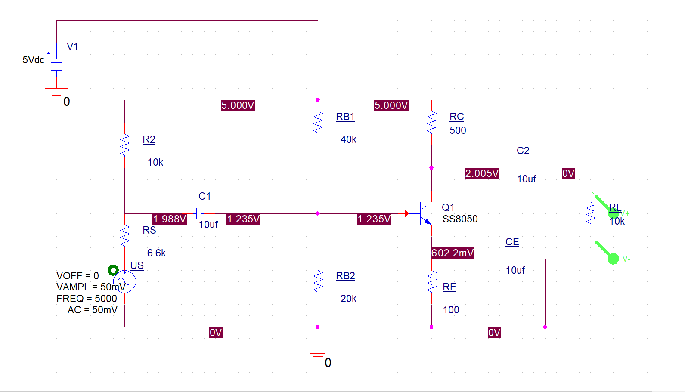
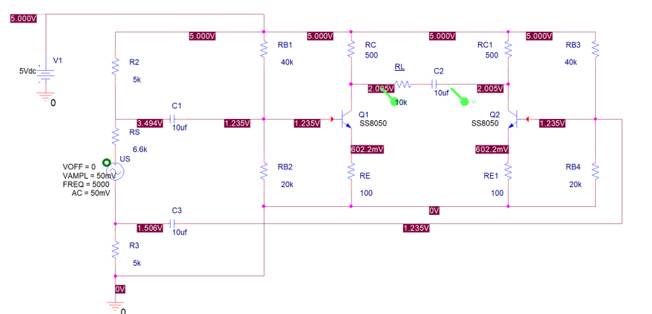

模拟电路实验（二） 共射放大电路与差分放大电路
实验目的
- 理解差模信号与共模信号，学习共射放大电路和差分放大电路的原理；
- 结合课上所学内容，了解三极管和MOS管的区别，学会看三极管的输出特性曲线，理解“工作点，小扰动”并掌握放大倍数的计算方法；
- 搭建放大电路并探索共射负载电阻对放大电路的影响；
预习材料
- 三极管静态工作点的分析方法：三极管放大区静态工作点的设置 - 知乎 (zhihu.com)
实验器材
面包板1个，示波器1台，万用表1个，信号发声器一台，传声器1个，USB线缆1条，USB母口1个，杜邦线若干，多种规格的电阻若干，多种规格的电容若干，8050三极管2个。实验步骤
- 查阅8050三极管特征曲线，能够根据传声器工作参数计算适宜的偏置电流；
- 参考电路图，在面包板上搭建传声器共射放大电路；搭建完成后尝试改变负载电阻，探究其对放大倍数影响；
 共射放大电路图 - 参考电路图，在面包板上搭建传声器差分放大电路（可选）。
 差分放大电路图
思考题
- 指出共射放大电路图中RB1,RB2的作用；
- 分析负载电阻RL大小对共射放大器放大倍数的影响。